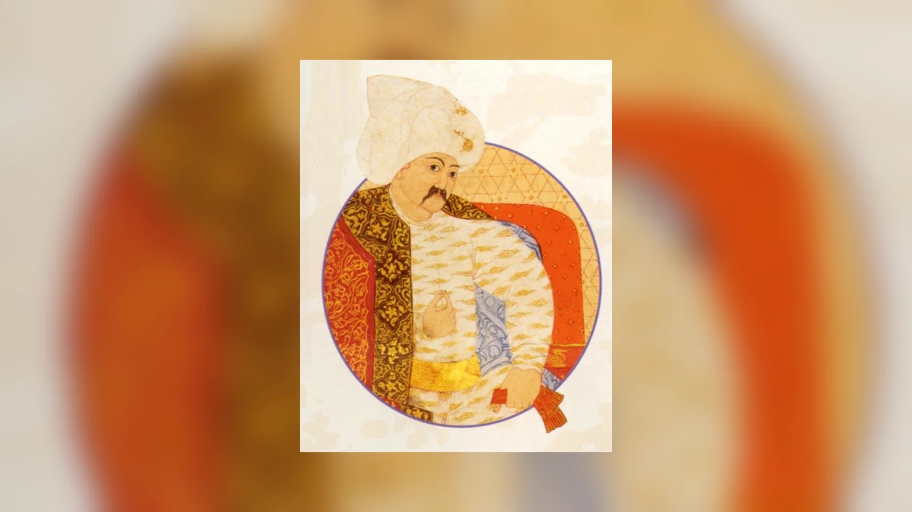
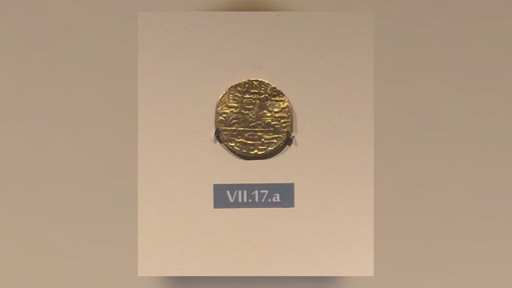
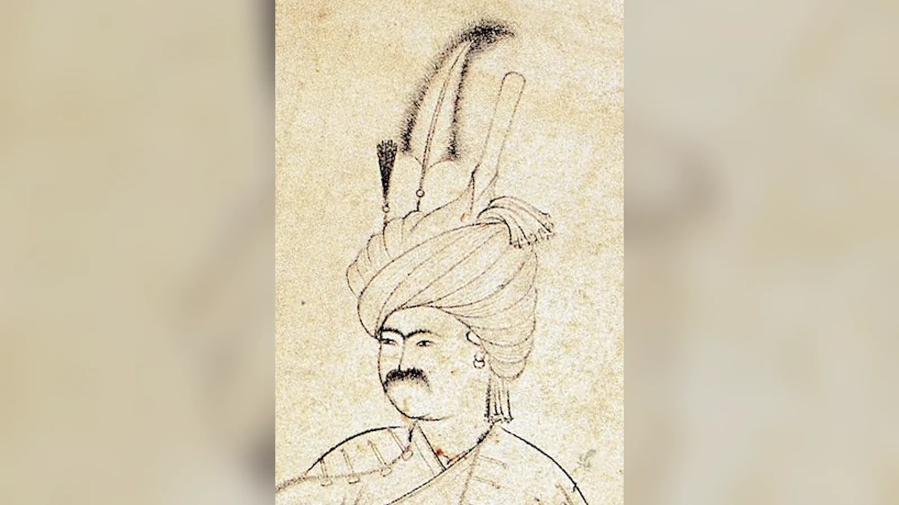
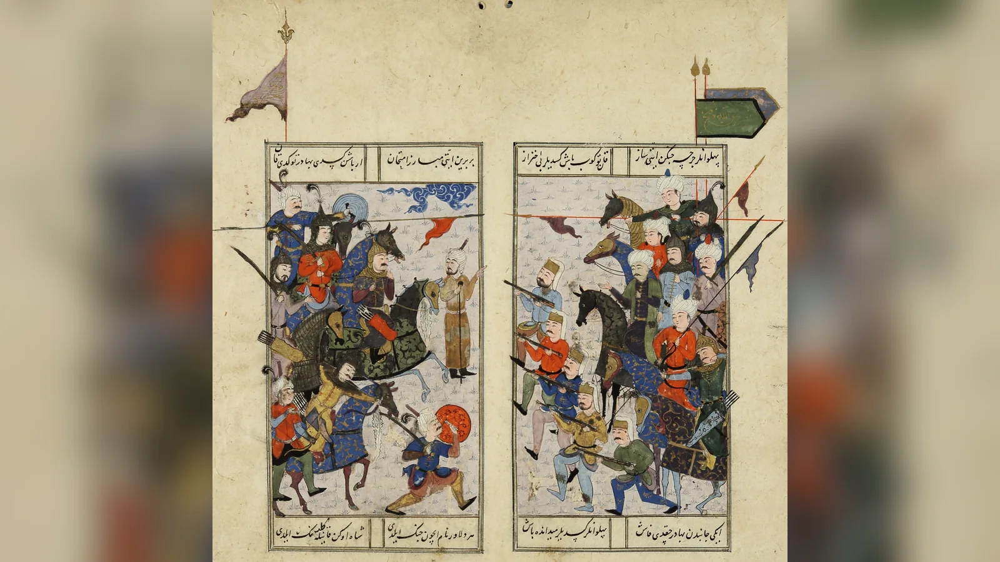
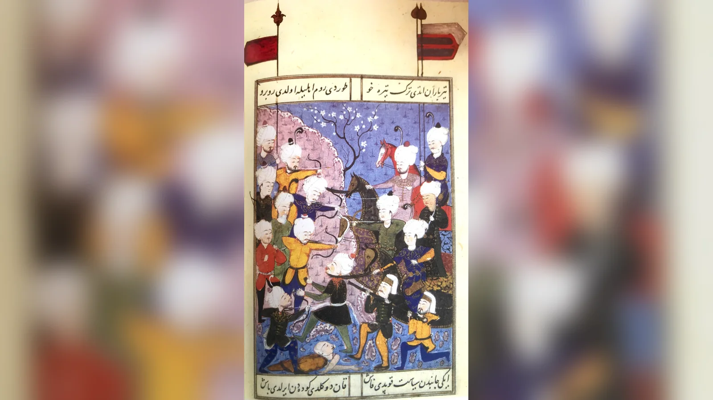
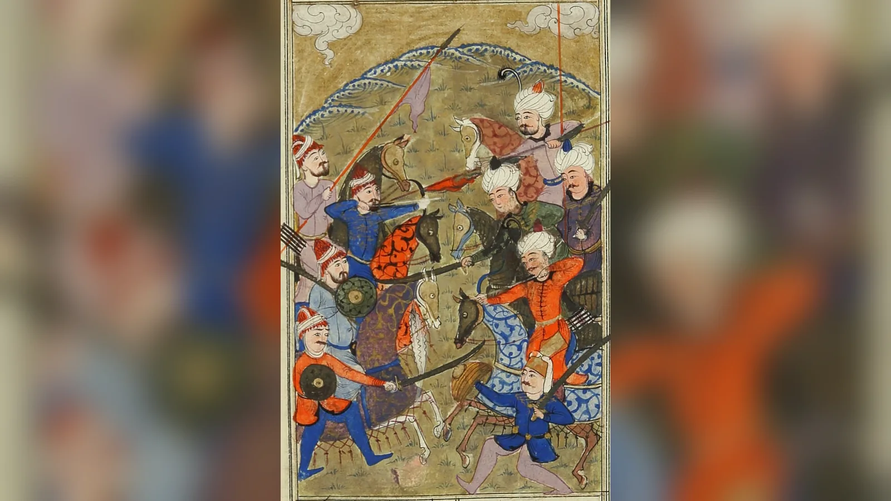
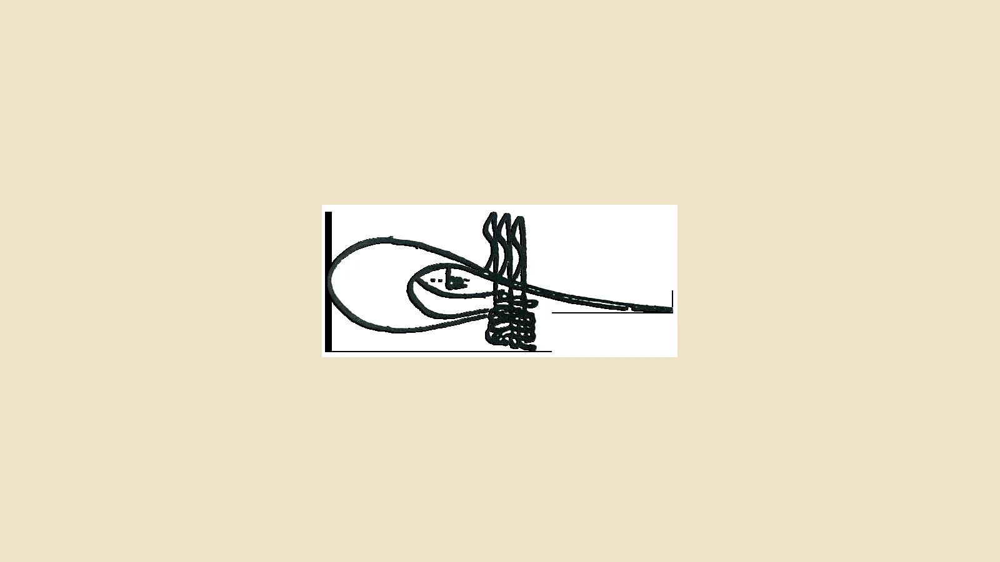
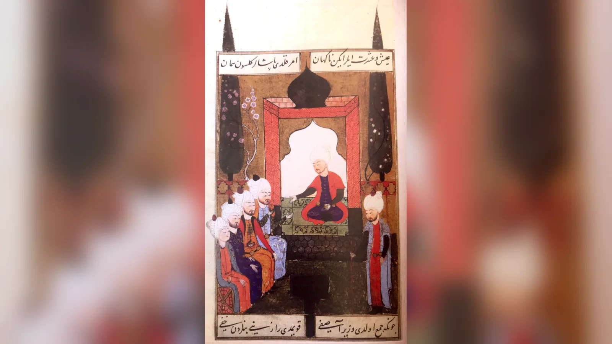
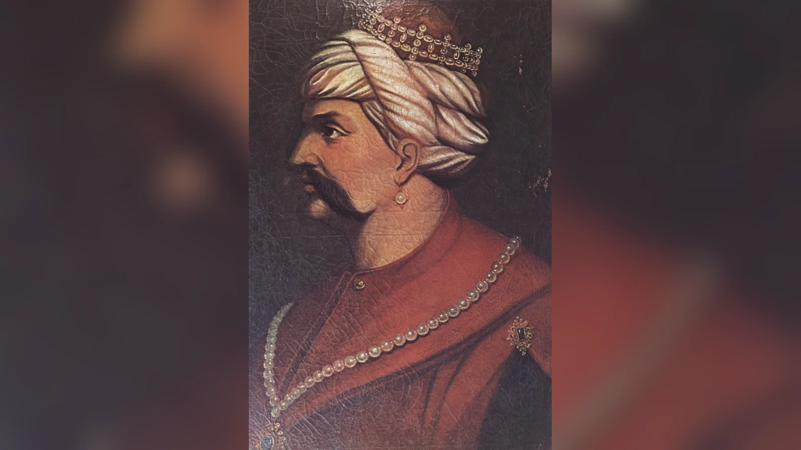
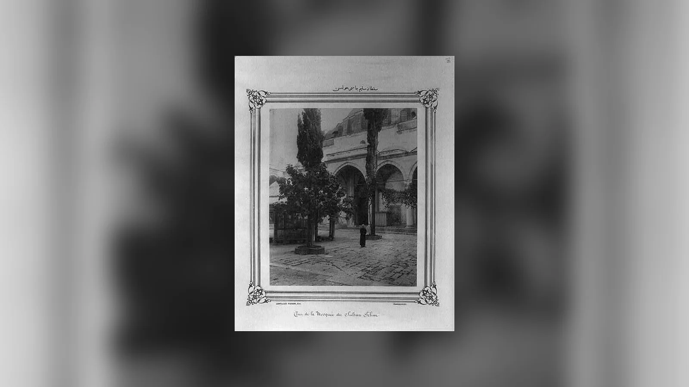

Yavuz Sultan Selim, Osmanlı hanedanının dokuzuncu padişahı, II. Bayezid'in oğlu ve Kanuni Sultan Süleyman'ın babasıdır. 24 Nisan 1512'de tahta çıktı, 21/22 Eylül 1520'de öldü. Sekiz yılı biraz aşan saltanatı, Osmanlı tarihindeki en kısa fakat sonuçları en geniş hükümdarlıklardan biri oldu. Selim tahta geçtiğinde devletin başlıca meselelerinden biri Anadolu'daki Safevî nüfuzu ve hanedan içi iktidar mücadelesiydi; öldüğünde Suriye ve Mısır Osmanlı yönetimine girmiş, Mekke ve Medine üzerindeki himaye Osmanlı hanedanına bağlanmış, İstanbul'un siyasi ufku İran sınırından Kızıldeniz'e kadar genişlemişti.
Bu dönüşümü yalnız fethedilen kilometrekarelerle ölçmek eksik kalır. Çaldıran'da Safevî ordusunun yenilmesi Osmanlıların Doğu Anadolu'daki konumunu güçlendirdi. Mercidâbık ve Ridâniye'den sonra Memlük Sultanlığı ortadan kalktı; Şam ve Kahire gibi iki büyük merkez, Mısır'ın vergi kaynakları ve Hicaz'a uzanan hac yolları Osmanlı siyasi sisteminin parçası hâline geldi. Selim'in oğlu Süleyman'a bıraktığı devlet, babası II. Bayezid'den devraldığı devletle aynı coğrafi ve diplomatik önceliklere sahip değildi.
Bu başarı tablosunun yanında, Selim'in tahta çıkış biçimi, kardeşlerini ve yeğenlerini ortadan kaldırması, Anadolu'daki Kızılbaş/Safevî yanlısı görülen kesimlere yönelik sert tedbirler ve vezirleriyle ilişkileri onun dönemini Osmanlı tarihinin en tartışmalı alanlarından biri yaptı. Üstelik Selim hakkında bugün çok bilinen bazı anlatılar — 40.000 Alevinin öldürülmesi, hilafetin 1517'de törenle devredilmesi, "Hâkimü'l-Haremeyn değil Hâdimü'l-Haremeyn" sözü, küpe takması veya babasını zehirletmesi — kaynaklarda aynı kesinlikte yer almıyor. Yavuz Sultan Selim'i anlamak, askerî başarılarla sonradan oluşan hükümdar efsanesini birbirinden ayırmayı gerektiriyor.
Amasya'dan Trabzon'a: Selim'in Şehzadelik Yılları
Selim'in doğum tarihi için kaynaklarda farklı kayıtlar vardır. 1467-1468 ihtimali zikredilse de 1470 daha güçlü kabul görür; doğum yeri, babası Şehzade Bayezid'in sancak beyi olduğu Amasya'dır. Annesi konusunda da eski yayınlarda karışıklık bulunur. Feridun Emecen, XVI. yüzyıl tarihçisi Cenâbî'ye dayanarak annesini Dulkadıroğlu Alâüddevle Bozkurt Bey'in kızı Ayşe Hatun olarak verir. Bazı kayıtlardaki Gülbahar adı, II. Bayezid'in annesi Gülbahar Hatun ile de karışmıştır. Bu nedenle internette görülen birbirinden farklı soy listelerini tek bir kesin şema gibi kullanmak güvenli değildir.
Osmanlı şehzadeleri yalnız sarayda yetişen veliahtlar değildi; sancaklarda yönetim tecrübesi kazanıyorlardı. Selim yaklaşık 1487'den itibaren Trabzon'da uzun yıllar sancak beyliği yaptı. Bu görev onun siyasi dünyasını belirleyen en önemli deneyimlerden biriydi. Trabzon, İstanbul'dan bakıldığında uzak bir Karadeniz sancağı gibi görünse de Gürcü prenslikleri, Akkoyunlu mirası ve yükselen Safevî gücüyle temas eden hassas bir sınır bölgesiydi.

Selim burada Gürcistan tarafına akınlar düzenledi ve doğudaki gelişmeleri yakından izledi. 1501'de Şah İsmail'in Tebriz'de Safevî Devleti'ni kurması, yalnız İran'da yeni bir hanedanın ortaya çıkması değildi. Safevî şeyhlerinin Anadolu'daki Türkmen toplulukları arasında uzun süredir bağlıları vardı. Şah İsmail hem hükümdar hem dinî-karizmatik lider olarak bu ağları siyasi bir güç hâline getirdi. Trabzon'daki Selim bu değişimi İstanbul'daki birçok devlet adamından daha yakından görüyordu.
Bu deneyimin ilerideki politikalarını tek başına açıkladığını söylemek mümkün değil. Selim'in Çaldıran'a giden siyaseti, tahta çıktıktan sonraki hanedan mücadelesi, Şahkulu İsyanı'nın yarattığı sarsıntı ve Osmanlı merkezî idaresinin kaygılarıyla birlikte şekillendi. Yine de Trabzon yılları, onun doğu sınırını geçici bir çevre sorunu değil, imparatorluğun merkezî güvenlik meselelerinden biri olarak görmesine katkıda bulunmuş olmalıdır.
Trabzon Selim'in Doğu Siyasetini Nasıl Şekillendirdi?
Trabzon'daki yaklaşık çeyrek yüzyıllık sancak tecrübesi, Selim'in biyografisinde çoğu zaman birkaç cümleyle geçilir. Oysa şehrin konumu, daha sonra padişah olduğunda neden doğu sınırını bu kadar hızlı biçimde devletin ana gündemine taşıdığını anlamaya yardım eder. Karadeniz'in doğusu, Gürcü prenslikleri, Erzincan-Diyarbakır hattı ve İran'a uzanan yollar birbirinden kopuk bölgeler değildi. Akkoyunlu siyasi düzeninin parçalanması ve Safevîlerin yükselişi, bu sınır kuşağındaki yerel beylerin ve Türkmen gruplarının bağlılıklarını sürekli yeniden belirliyordu.
Selim'in Gürcü bölgelerine yönelik askerî faaliyetleri ona sınır savaşının pratiklerini de gösterdi. İstanbul'daki merkezî bürokrasi açısından uzak görünen kabile, aşiret ve yerel hanedan ilişkileri Trabzon yöneticisi için günlük siyasetin parçasıydı. Safevî tarikatının devletleşmesi de bu sırada gerçekleşti. Şah İsmail'in 1501'de Tebriz'i ele geçirip hükümdarlığını ilan etmesi, Selim'in sancak beyliği döneminin ortasına rastladı.
Bununla birlikte "Selim Trabzon'da Safevîleri tanıdı ve daha o gün Çaldıran'ı planladı" gibi doğrusal bir biyografi kurmak mümkün değildir. İnsanların yirmi yıl sonraki kararlarını gençlik deneyimlerinden kaçınılmaz biçimde çıkarmak tarihçinin elindeki kanıtı aşar. Daha güvenli çıkarım, Selim'in doğu sınırındaki siyasi ve dinî hareketliliği yakından izleme fırsatına sahip olduğu ve Safevî meselesini tahta çıkmadan önce ciddiye aldığıdır.
Trabzon aynı zamanda Selim'in aile hayatının merkezlerinden biriydi. Annesi Ayşe Hatun bir süre yanında yaşadı; oğlu Süleyman burada doğdu. Şehzadenin kendi idarî kadrosu, timar tevcîhleri ve vakıf faaliyetleri de sancak beyliğinin yalnız askerî sınır nöbeti olmadığını gösterir. Padişahlığa geldiğinde Selim sıfırdan yönetim öğrenen bir hükümdar değildi; uzun süre eyalet idaresi yürütmüş, askerî ve mali meselelerle uğraşmıştı.
Bu tecrübe, onun babası II. Bayezid'in son yıllarındaki siyasete yönelttiği eleştiriyi de anlamlı kılar. Selim ve taraftarları Safevî tehdidine karşı daha aktif bir politika gerektiğini savunurken, bu söylem aynı zamanda taht mücadelesinde meşruiyet aracıydı. Yani "doğudaki tehlikeyi herkesten önce gören şehzade" imgesi hem gerçek sınır tecrübesine hem de Selim yanlısı siyasi propagandaya dayanıyordu. İki katmanı ayırmadan anlatmak, daha sonra yazılan Selimnâmelerin hükümdar portresini doğrudan biyografik gerçek kabul etmek olur.
Taht Mücadelesi: Selim Babasını Zorla mı İndirdi?
II. Bayezid'in son yıllarında Osmanlı veraset sistemi, modern anlamda belirlenmiş bir veliahtlık kuralına sahip değildi. Hanedanın erkek üyeleri taht üzerinde hak iddia edebiliyor, sonucun belirlenmesinde şehzadelerin askerî ve siyasi desteği büyük rol oynuyordu. Bayezid'in hayatta kalan oğulları Ahmed, Korkut ve Selim arasındaki rekabet bu yüzden basit bir aile kavgası değildi.
Şehzade Ahmed özellikle Anadolu'daki çevrelerden güçlü destek alıyordu ve babasının tercihine en yakın aday olarak görülüyordu. Korkut eğitimli, edebiyat ve dinle ilgilenen bir şehzadeydi; o da tahta adaydı. Selim ise Trabzon'dan daha elverişli bir sancağa geçmek ve İstanbul'daki gelişmelere yakın olmak istiyordu. Rumeli'ye geçmesi, babasıyla karşı karşıya gelmesi ve 1511'deki başarısız Çorlu girişimi, taht yolunun kesintisiz bir zafer yürüyüşü olmadığını gösterir.
Dengeleri değiştiren unsurlardan biri yeniçerilerin Şehzade Ahmed'e karşı tavrı ve Selim'e verdikleri destekti. Şahkulu İsyanı'nın yarattığı kriz, Safevî tehlikesine karşı daha saldırgan bir hükümdar beklentisini de güçlendirdi. II. Bayezid sonunda 24 Nisan 1512'de tahtı Selim'e bıraktı. Bu devir, özgür iradeyle yapılan sakin bir emeklilik olarak görülemeyeceği gibi yalnızca "Selim babasını darbeyle indirdi" cümlesine de sığmaz; saray grupları, askerî baskı, şehzadelerin rekabeti ve yaşlanan hükümdarın zayıflayan otoritesi birlikte rol oynadı.
II. Bayezid tahttan ayrıldıktan sonra Dimetoka'ya giderken 10 Haziran 1512'de Abalar köyünde öldü. Selim'in babasını zehirlettiği iddiası özellikle bazı Batılı ve sonraki kaynaklarda yer aldı. Buna karşılık döneme ait başka kayıtlar hastalık ve doğal ölüm ihtimalini destekler; Selim'in zehir emri verdiğini doğrulayan kesin bir belge yoktur. Dolayısıyla "Yavuz babasını öldürdü" ifadesi doğrulanmış tarihsel bilgi değil, erken tarihten itibaren dolaşan fakat kanıtlanamamış bir iddiadır.
Kardeşlerini Neden Öldürttü?
Selim tahta çıktığında hanedan mücadelesi bitmedi. Şehzade Ahmed Konya çevresinde güç toplamaya devam ediyor, Korkut da yaşayan bir hanedan üyesi olarak potansiyel rakip kabul ediliyordu. Osmanlı veraset düzeninde büyük oğlun otomatik olarak tahta çıkması gibi kesin bir kural bulunmadığı için, yaşayan her yetişkin şehzade yeni bir iç savaşın odağı hâline gelebilirdi. Fetret Devri'nin ve Cem Sultan meselesinin hanedan hafızası hâlâ canlıydı.
Bu bağlam, Selim'in kararlarını açıklar; fakat onları şiddetten arındırmaz. Korkut 1513'te yakalanarak boğduruldu. Ahmed de aynı yıl Yenişehir yakınlarında yenildikten sonra öldürüldü. Rakip şehzadelerin oğullarının bir kısmı da ortadan kaldırıldı. Selim böylece tahta çıkabilecek hanedan rakiplerini tasfiye ederek iktidarı kendi kolunda topladı.
Bu infazları yalnız "devletin bekası için zorunluydu" diyerek kapatmak, siyasi tercihi kaçınılmaz doğa yasasına dönüştürür. Osmanlı hanedanı taht kavgası riskini gerçek bir tehdit olarak görüyordu; buna rağmen hangi rakibin ne zaman öldürüleceği hükümdarın ve onu destekleyen siyasi çevrenin kararıydı. Dönemin koşullarını anlamak, yapılanları ahlaken aklamakla aynı şey değildir.
Selim'in oğlu Süleyman'ın 1520'de rakipsiz biçimde tahta çıkabilmesi bu tasfiyelerin doğrudan sonuçlarından biri oldu. Selim'in ölümünde hayatta kalan ve taht için açık rakip oluşturabilecek başka bir oğlu yoktu. Böylece Kanuni döneminin başlangıcında, Selim'in kendi tahta çıkışında yaşadığı türden bir kardeş savaşı görülmedi.
"Yavuz" Lakabı Ne Anlama Geliyordu?
Bugün "Yavuz" adı çoğunlukla cesur, sert ve kararlı bir hükümdar imgesiyle birlikte düşünülüyor. Fakat kelimenin tarihsel anlamı bu kadar düz değildir. Eski Türkçe ve Osmanlı kullanımında "yavuz" olumsuz çağrışımlara; kötü, haşin, sert veya korkutucu anlamlara sahip olabiliyordu. Zaman içinde Selim'in adıyla özdeşleşmesi kelimenin çağrışımını da değiştirdi ve "gözü pek, güçlü, eğilmez" gibi daha olumlu anlamlar öne çıktı.
Selim'in kendi belgelerinde "Selim Şah" adlandırması görülür. "Yavuz Sultan Selim" biçiminin bugün bildiğimiz ölçüde standartlaşması daha geç tarih yazımının ürünüdür. H. Erdem Çıpa'nın Selim'in ölümünden sonra şekillenen hükümdar hafızasına ilişkin çalışması, Selimnâmelerin onun tartışmalı iktidarını meşrulaştıran ve ideal hükümdar imgesine dönüştüren önemli araçlar olduğunu gösterir.
Bu nedenle lakabı, doğumdan itibaren taşıdığı değişmez bir onur unvanı gibi düşünmek yanıltıcıdır. Selim'in sertliği hakkındaki çağdaş ve sonraki anlatılarla "Yavuz" kelimesinin anlam dönüşümü birbirini besledi. Bugün olumlu kahramanlık çağrışımı taşıyan ad, XVI. yüzyıldaki her okurda aynı duyguyu uyandırmıyordu.
Safevîler Osmanlı İçin Neden Bu Kadar Büyük Bir Sorundu?
Osmanlı-Safevî çatışmasını yalnız "Sünniler ile Şiiler savaştı" cümlesiyle açıklamak, 16. yüzyıl Anadolu'sunun siyasi yapısını görünmez kılar. Şah İsmail'in Safevî Devleti, On İki İmam Şiiliğini devletin dinî kimliğinin merkezine yerleştirirken gücünün önemli bölümünü Kızılbaş Türkmen savaşçı gruplarından alıyordu. Bu toplulukların bir kısmının Anadolu'da akrabalık ve tarikat bağları bulunuyordu.
"Kızılbaş", "Alevi", "Şii" ve "Safevî taraftarı" kelimelerini eş anlamlı kullanmak tarihsel olarak sorunludur. Kızılbaş adı, Safevî şeyhlerine bağlı belirli Türkmen grupları ve onların dinî-siyasi dünyasıyla ilişkili tarihsel bir terimdir. Bugünkü Alevi kimliği bu mirasla çeşitli bağlar taşır, fakat 1514'te kayda geçen her Kızılbaşı modern Alevi kategorisiyle birebir eşitlemek doğru değildir. Benzer biçimde bütün Şiiler Safevî ajanı veya Osmanlı karşıtı değildi.
Osmanlı yönetiminin kaygısı dinî farklılıkla sınırlı değildi. Safevî halifeleri Anadolu'da taraftar topluyor, bazı Türkmen grupları İran'a göç ediyor, Şah İsmail'in karizmatik otoritesi Osmanlı tebaasının bir bölümünde hanedan sınırlarını aşan sadakat üretebiliyordu. 1511'deki Şahkulu İsyanı bu korkuyu somutlaştırdı. İsyan yalnız teolojik bir anlaşmazlık değildi; vergi, yerel idare, Türkmen topluluklarının merkezileşmeyle ilişkisi ve Safevî propagandası aynı sahada kesişiyordu.

Ekonomik boyut da vardı. İran ipeğinin Anadolu üzerinden Akdeniz pazarlarına ulaşması önemli gelir yaratıyordu. Doğu Anadolu'daki şehirler ve yollar Akkoyunlu mirası, yerel Kürt ve Türkmen güçleri, Safevîler ve Osmanlılar arasında rekabet alanıydı. Selim'in doğu siyaseti mezhep mücadelesiyle iç içeydi ama ona indirgenemez. Karşı karşıya gelen iki hanedan aynı zamanda sınır, vergi, ticaret, askerî insan gücü ve siyasi sadakat için mücadele ediyordu.
Yavuz Sultan Selim 40.000 Aleviyi Öldürttü mü?
Selim dönemi hakkındaki en ağır ve günümüzde en fazla siyasi anlam yüklenen iddialardan biri, Çaldıran Seferi öncesinde 40.000 Alevinin veya Kızılbaşın öldürüldüğüdür. Konunun ilk sorunu terminolojidir: XVI. yüzyıl kaynakları bugünkü toplumsal anlamıyla "40.000 Alevi" kategorisini kullanmaz; tartışmanın tarihsel bağlamında Kızılbaşlar ve Safevî yanlısı kabul edilen gruplar vardır.
Osmanlı yönetiminin Anadolu'daki Kızılbaşları tespit etmeye, Safevîlerle bağlantılı gördüğü kişileri takip etmeye ve bazılarını ağır biçimde cezalandırmaya çalıştığına dair kaynaklar bulunur. Sürgün, hapis ve infaz uygulamaları yaşandı. Selim'in Safevî taraftarlığını yalnız kişisel inanç meselesi değil, savaş öncesinde devletin güvenliğine yönelik siyasi sadakat sorunu olarak gördüğü açıktır.
40.000 sayısının niteliği ise çok daha tartışmalıdır. İdrîs-i Bitlisî'ye dayanan tarih geleneğinde on binlerce kişinin kayda geçirildiği ve cezalandırıldığı anlatılır. Encyclopaedia Iranica'daki Şah İsmail maddesi de 40.000 kişinin öldürüldüğünün "söylendiğini", fakat bunun büyük bir sayıyı ifade eden kalıplaşmış bir rakam olabileceğini belirtir. Modern araştırmacılar, böyle büyük çaplı bir infazı doğrudan doğrulayacak arşiv zincirinin bulunmamasına, nüfus ve lojistik sorunlarına ve sonraki kroniklerin birbirinden aktarım yapmasına dikkat çeker.
Burada iki ayrı soruyu karıştırmamak gerekir. "Tam olarak 40.000 kişi infaz edildi mi?" sorusuna mevcut kanıtlarla kesin evet demek mümkün değildir. "Selim döneminde Kızılbaş/Safevî yanlısı görülen topluluklara yönelik baskı, takip ve infaz yaşandı mı?" sorusunun cevabı ise evettir. Sayının tartışmalı olması uygulamaları yok etmez; uygulamaların varlığı da 40.000 rakamını otomatik olarak doğrulamaz.
Bu olayların Alevi toplumsal hafızasındaki yeri ayrıca gerçektir. Tarihçinin görevi bu hafızayı küçümsemek veya modern siyasi polemiğin dilini tekrarlamak değil, hangi iddianın hangi kaynağa dayandığını ayırmaktır. En ölçülü sonuç, Selim'in Safevî tehdidine karşı Anadolu'da sert bir güvenlik ve cezalandırma siyaseti yürüttüğü; ancak "40.000 kişinin katledildiği" rakamının doğrulanmış kesin bir bilanço sayılamayacağıdır.
Çaldıran Savaşı Neden Yapıldı?
Selim 1514 baharında büyük bir orduyla doğuya yürüdü. Seferin hedefi Şah İsmail'i Osmanlı sınırlarından uzaklaştırmak, Anadolu'daki Safevî nüfuzunu kırmak ve doğudaki siyasi dengeyi değiştirmekti. Şah İsmail doğrudan meydan savaşına girmek yerine Osmanlı ordusunun ilerlediği bölgelerde kaynakları boşaltan bir strateji izledi. Uzayan yürüyüş, iaşe sıkıntısı ve belirsizlik Osmanlı ordusunda ciddi huzursuzluk yarattı.
İki ordu 23 Ağustos 1514'te Çaldıran Ovası'nda karşılaştı. Osmanlıların ateşli silahları, topları ve yeniçeri tüfekçileri savaşta önemli üstünlük sağladı. Safevî kuvvetleri ise son derece hareketli ve etkili süvari birliklerine dayanıyordu. Çaldıran'ı "topu olan kazandı" şeklinde açıklamak yine de yetersizdir. Osmanlı ordusunun sayısal kapasitesi, savaş düzeni, lojistik organizasyonu ve ateş gücünü tahkimatla birleştirmesi sonucu belirledi.

Şah İsmail ağır yenilgiye uğradı ve Selim Tebriz'e girdi. Fakat Osmanlı ordusu burada kalmadı. Askerlerin uzun süre İran içlerinde ilerlemeye karşı çıkması ve ikmal sorunları Selim'i geri dönmeye zorladı. Bu ayrıntı önemlidir: Çaldıran büyük bir Osmanlı zaferiydi, fakat Safevî Devleti'ni yıkmadı. Şah İsmail 1524'e kadar hüküm sürdü, Safevî hanedanı ise 18. yüzyıla kadar varlığını korudu.
Savaşın daha kalıcı sonucu, Doğu Anadolu'daki güç dengesinin Osmanlı lehine değişmesi ve Şah İsmail'in savaş meydanındaki yenilmezlik/karizmatik dokunulmazlık imgesinin yara almasıydı. Diyarbakır ve çevresindeki yerel güçlerin Osmanlı tarafına geçişi, sonraki yıllarda bölgenin Osmanlı sistemine katılmasını kolaylaştırdı.
Selim ile Şah İsmail arasında sert mektuplaşmalar yapıldığı bilinir. Buna karşılık satranç oynama, Selim'in kılık değiştirerek Şah'ın sarayına gitmesi veya karşılıklı kadın kıyafeti gönderme gibi popüler hikâyelerin ayrıntıları güvenilir çağdaş kayıtlarla aynı düzeyde doğrulanamaz. İki hükümdar arasındaki gerçek siyasi propaganda zaten yeterince serttir; sonradan eklenen renkli menkıbeleri tarihsel olay diye anlatmaya gerek yoktur.
Turnadağ: Unutulan Fakat Kritik Ara Adım
Çaldıran ile Mısır seferi arasındaki en önemli gelişmelerden biri Dulkadıroğulları meselesiydi. Maraş ve Elbistan merkezli Dulkadır Beyliği, Osmanlılarla Memlükler arasında tampon bölgede bulunuyordu. Alâüddevle Bozkurt Bey, Selim'in Çaldıran seferine katılma çağrısını kabul etmemiş ve Osmanlı ilerleyişine karşı ihtiyatlı bir siyaset izlemişti.
1515'te Hadım Sinan Paşa komutasındaki Osmanlı kuvvetleri, Şehsuvaroğlu Ali Bey'in desteğiyle Dulkadır ordusunu Turnadağ/Ördekli çevresinde yendi; Alâüddevle öldürüldü. Beyliğin başına Osmanlı yanlısı Ali Bey getirildi. Bu gelişme Osmanlıların Güneydoğu Anadolu'ya erişimini kolaylaştırırken Memlüklerin kuzey sınırındaki nüfuzunu daralttı.

Turnadağ'ı Selim ile Alâüddevle arasındaki kişisel husumete indirgemek bu yüzden yanıltıcıdır. Dulkadır toprakları Osmanlı, Safevî ve Memlük güç alanlarının kesiştiği stratejik bölgedeydi. 1515'teki değişim, bir yıl sonra başlayacak Osmanlı-Memlük savaşının jeopolitik zeminini doğrudan etkiledi.
Osmanlı ile Memlükler Neden Savaştı?
Selim'in Mısır seferinin "hilafeti almak için" yapıldığı, popüler tarih anlatısının en sorunlu basitleştirmelerinden biridir. 1516'da savaş başladığında Memlük Sultanlığı Kahire merkezli, Suriye ve Hicaz üzerinde nüfuz sahibi büyük bir bölgesel güçtü. Osmanlılarla Memlükler arasındaki rekabet Selim'den önce de vardı.
Safevî meselesi ilişkileri daha da gerginleştirdi. Memlüklerin Osmanlı-Safevî rekabetindeki tutumu İstanbul'da kuşkuyla izleniyor, Dulkadır Beyliği üzerindeki nüfuz mücadelesi iki devleti doğrudan karşı karşıya getiriyordu. Güneydoğu Anadolu ve Kuzey Suriye'nin kontrolü, ticaret yolları ve sınır güvenliği de çatışmanın parçalarıydı.
Memlük Devleti kendi içinde bütünüyle çökmüş değildi, ancak askerî yapısı Osmanlıların topçu ve tüfekli piyadeyi savaş düzenine daha yoğun biçimde yerleştiren sistemine karşı ciddi sorunlar yaşadı. Portekizlilerin Hint Okyanusu'na girişi ve Kızıldeniz ticaret yollarına yönelik baskı da Mısır'ın stratejik dünyasını değiştirmişti.
Selim'in güneye yönelmesi böylece tek nedenli bir "kutsal toprak seferi" değildi. Osmanlılar Safevîlerle mücadele ederken güneydoğu sınırını güvenceye almak, Memlüklerin nüfuz alanını ortadan kaldırmak ve Suriye-Mısır hattını denetlemek istiyordu. Sonuç, başlangıçtaki sınır sorunlarının çok ötesine geçti: Memlük Sultanlığı tamamen ortadan kalktı.
Mercidâbık ve Ridâniye
24 Ağustos 1516'da Halep'in kuzeyindeki Mercidâbık'ta Selim'in ordusu Memlük Sultanı Kansu Gavri'nin kuvvetleriyle karşılaştı. Osmanlı ateşli silahları ve düzenli piyadesi önemli avantaj sağladı; Memlük komuta yapısındaki sorunlar ve bazı emirlerin tutumu da yenilgiyi ağırlaştırdı. Kansu Gavri savaş sırasında öldü. Ardından Halep ve Şam Osmanlı yönetimine girdi.

Kahire'de Tomanbay yeni Memlük sultanı seçildi ve direnişi örgütledi. Selim ordusuyla Sina'yı geçerek Mısır'a ilerledi. 22 Ocak 1517'de Ridâniye'de yapılan savaş Osmanlı zaferiyle sonuçlandı. Tomanbay Kahire içinde ve çevresinde direnişi sürdürdü; yakalandıktan sonra Nisan 1517'de idam edildi. Onun ölümünü "korkak Memlüklerin sonu" veya Selim'in mutlak askerî dehası gibi sloganlarla anlatmak, savaşın gerçek karmaşıklığını siler.
Memlük ordusunun yenilgisini yalnız "kılıç kullandılar, Osmanlı top kullandı" klişesine indirgemek de yanlıştır. Memlükler ateşli silahlardan tamamen habersiz değildi. Fakat askerî kurumlarının merkezinde seçkin süvari geleneği bulunuyor, Osmanlı ordusu ise topçu ve tüfekli yeniçerileri meydan savaşında daha etkili biçimde kullanabiliyordu. Komuta, siyaset, insan gücü ve lojistik farkları teknolojiyle birlikte düşünülmelidir.
Mısır'ın ele geçirilmesi Osmanlı hazinesine ve ticaret sistemine büyük kaynaklar ekledi. Suriye limanları, Kahire, Nil vadisi ve Kızıldeniz bağlantısı İstanbul merkezli imparatorluğun ekonomik coğrafyasını değiştirdi. Giancarlo Casale'nin vurguladığı gibi Mısır'ın fethi, Osmanlıları Hint Okyanusu ticaret ve güç mücadelesiyle doğrudan temas ettiren sürecin de başlangıcıydı.
Mekke, Medine ve "Hâdimü'l-Haremeyn" Meselesi
Mekke ve Medine, Selim'in ordusunun gidip klasik bir meydan savaşıyla fethettiği şehirler değildi. Memlük Sultanlığı'nın çöküşünden sonra Mekke Şerifi Osmanlı üstünlüğünü tanıdı; Hicaz'ın Mısır'la olan iaşe ve siyasi bağlantısı yeni düzene uyum sağladı. Böylece kutsal şehirlerin himayesi Osmanlı hanedanına geçti.
"Hâdimü'l-Haremeyn", yani "iki kutsal şehrin hizmetkârı" unvanı Memlük sultanlarınca Selim'den önce de kullanılmıştı. Osmanlılarda Selim'den itibaren hükümdarlık unvanları arasına girdi. Buna karşılık meşhur hikâyenin ayrıntıları daha geç kaynaklara dayanır: rivayete göre hutbede kendisine "Hâkimü'l-Haremeyn" denince Selim itiraz etmiş, "Hâdimü'l-Haremeyn" denmesini istemiş ve gözyaşı dökmüştür.
Bu sahnenin çağdaş bir tutanakla doğrulandığı söylenemez. Evliya Çelebi ve Müneccimbaşı gibi daha geç yazarlar anlatının yayılmasında önemlidir. Unvanın Selim döneminden itibaren kullanılması tarihsel gerçektir; unvanın ortaya çıkışını açıklayan dramatik hutbe sahnesi ise menkıbevî özellik taşır. İkisini birbirine karıştırmamak gerekir.
Hilafet 1517'de Yavuz Sultan Selim'e Gerçekten Devredildi mi?
Okul kitaplarında uzun süre anlatılan hikâyeye göre Kahire'deki son Abbâsî halifesi III. Mütevekkil İstanbul'a getirilmiş, Ayasofya'da düzenlenen törenle kılıcını veya hırkasını Selim'e teslim etmiş ve hilafeti Osmanlı hanedanına devretmiştir. Bu sahne güçlü bir tarihsel hafıza oluşturdu; fakat çağdaş kaynaklarla doğrulanmış bir 1517 "devir töreni" değildir.
Memlük Kahiresi'nde Abbâsî soyundan halifeler gerçekten bulunuyordu. Bunların siyasi gücü sınırlıydı; Memlük sultanlarının meşruiyet düzeninde sembolik ve törensel bir konuma sahiptiler. III. Mütevekkil Osmanlı fethinden sonra İstanbul'a götürüldü ve daha sonra Kahire'ye dönmesine izin verildi. Fakat halifeliğin tek bir hukukî işlemle Osmanlı hanedanına aktarıldığını gösteren çağdaş bir belge veya açık tören kaydı yoktur.

Daha da önemlisi, Osmanlı hükümdarları Selim'den önce de "halife" kelimesini çeşitli bağlamlarda kullanabiliyordu. İslam siyaset geleneğinde halife unvanının kullanımı, yalnız Bağdat veya Kahire Abbâsîlerinden alınacak bir mülkiyet belgesine bağlı değildi. Mustafa Banister'ın Kahire Abbâsîleri üzerine çalışması, resmî hilafet devri töreni iddialarını hatalı kabul eder.
Bunun tersine "1517'nin hilafet açısından hiçbir anlamı yoktu" demek de eksik olur. Selim artık Kahire'yi, Şam'ı ve Hicaz'ın himayesini kontrol eden hükümdardı. Mekke ve Medine ile kurulan bağ, hac yollarının güvenliği ve eski İslam imparatorluk merkezlerinin Osmanlı egemenliğine girmesi hanedanın Sünni İslam dünyasındaki konumunu olağanüstü güçlendirdi. Osmanlı sultanlarının evrensel halifelik iddiası sonraki yüzyıllarda, özellikle dış siyaset şartları değiştikçe daha belirgin bir siyasi içerik kazandı.
Buradan çıkabilecek ölçülü sonuç şudur: 1517 gerçek bir siyasi ve sembolik dönüm noktasıdır; fakat bunu "son Abbâsî halifesi bir tören yaptı ve hilafeti hukuken Yavuz'a devretti" şeklinde anlatmak kaynakların desteklediğinden daha kesin bir hikâye kurar.
Mısır'ın Fethi Osmanlı Ekonomisini Neden Değiştirdi?
Mısır'ın önemi yalnız Kahire'nin büyüklüğünden veya Memlük hazinesinin ele geçirilmesinden kaynaklanmıyordu. Nil vadisinin tarımsal üretimi, Doğu Akdeniz limanlarıyla bağlantısı ve Kızıldeniz üzerinden Hint Okyanusu ticaretine açılması, bölgeyi erken modern dünyanın en değerli ekonomik alanlarından biri yapıyordu. Osmanlı yönetimi Mısır'ı imparatorluğun sıradan bir sınır eyaleti olarak değil, kendi mali ve idarî düzeni korunması gereken büyük bir gelir merkezi olarak örgütledi.
Baharat ticareti bu dönüşümün en dikkat çekici parçalarından biriydi. Hint Okyanusu'ndan gelen ürünler Kızıldeniz limanlarına, oradan Mısır üzerinden Akdeniz pazarlarına ulaşıyordu. Portekizlilerin Ümit Burnu rotasıyla Hint Okyanusu'nda askerî ve ticari güç kurması, Memlüklerin son döneminde başlamıştı. Selim'in Mısır'ı almasıyla bu rekabetin mirası Osmanlılara geçti. Sonraki on yıllarda Süveyş, Yemen, Basra ve Hint kıyılarına uzanan Osmanlı faaliyetlerini yalnız Kanuni'nin yeni bir politikası olarak görmek bu nedenle eksik kalır.
Mısır'ın vergi gelirlerinin İstanbul için önemi de zamanla arttı. Eyaletin gelirleri yerel yönetim, askerî giderler ve Hicaz'ın iaşesiyle bağlantılıydı; fazlanın bir bölümü merkezî hazineye aktarılıyordu. Mekke ve Medine'nin ihtiyaçlarının Mısır üzerinden karşılanması, ekonomik yönetimle dinî meşruiyeti doğrudan birbirine bağladı. Haremeyn'in "hizmetkârı" olmak yalnız bir unvan taşımak değil, hac yollarının ve kutsal şehirlerin iaşesini sürdürebilecek mali organizasyona sahip olmak anlamına geliyordu.
Suriye'nin katılması da bu ağın kuzey bölümünü İstanbul'a bağladı. Halep büyük bir ticaret merkeziydi; Şam ise hem bölgesel ekonomi hem hac organizasyonu açısından kritik konumdaydı. Böylece 1516-1517 fetihleri, Osmanlıların Avrupa ve Anadolu'daki gelir kaynaklarına yeni bir Arap vilayetleri sistemi ekledi.
Bu sonuçlar Selim'in bütün seferleri baştan "küresel ticaret stratejisi" adı verilen ayrıntılı bir planla yürüttüğünü kanıtlamaz. Böyle bir ifade hükümdarın zihnine elimizde olmayan modern bir strateji belgesi yerleştirir. Kanıtların gösterdiği daha ölçülü sonuç, Mısır'ın ele geçirilmesinin Osmanlıların önüne Selim'in sefer kararından çok daha geniş ekonomik ve deniz aşırı meseleler çıkardığıdır. Fetih, devletin coğrafyasını değiştirdiği kadar hangi ticaret yollarını, hangi denizleri ve hangi uzak rakipleri hesaba katmak zorunda olduğunu da değiştirdi.
Selim Osmanlı Topraklarını Kaç Kat Büyüttü?
"Yavuz sekiz yılda Osmanlı topraklarını iki buçuk katına çıkardı" veya "üç kat büyüttü" gibi rakamlar sık tekrarlanır. Erken modern imparatorlukların sınırları bugünkü kadastro ve ulusal sınır sistemleri gibi ölçülmediği için, saltanat başı ve sonu yüzölçümünü kilometrekare hassasiyetinde karşılaştırmak yanıltıcıdır. Vasal bölgeler, geçici askerî denetim alanları ve doğrudan eyalet yönetimi birbirinden ayrılmalıdır.
Selim'in fetihlerinin büyüklüğü için daha anlamlı ölçüt, hangi bölgelerin imparatorluğa katıldığıdır. Suriye ve Mısır, Doğu Akdeniz'in en önemli ekonomik ve şehirsel merkezlerindendi. Kahire büyük nüfusu ve vergi kapasitesiyle Osmanlı maliyesine yeni bir ağırlık ekledi. Şam hac yollarının merkezlerinden biriydi. Hicaz üzerindeki himaye hanedana dinî prestij sağladı. Kızıldeniz kıyıları Portekiz yayılmasının gündeme getirdiği Hint Okyanusu siyasetinin kapısını açtı.
Bu yüzden Selim döneminin asıl dönüşümü haritadaki renk alanının genişlemesinden fazlasıdır. Osmanlı Devleti, Balkanlar ve Anadolu merkezli bir güç olmaya devam ederken Arap vilayetlerini ve İslam dünyasının tarihî merkezlerini yöneten çok daha geniş bir imparatorluk hâline geldi. Kanuni döneminin Avrupa, İran ve Hint Okyanusu'na aynı anda uzanan siyaseti bu yeni coğrafi zeminin üzerinde gelişti.
Sert Hükümdar İmgesi ve Yönetim Tarzı
Selim'in sert mizacı yalnız modern popüler tarihin icadı değildir. Yakın dönem kronikleri onun öfkesinden, hızlı kararlarından ve devlet adamlarına karşı ağır cezalarından söz eder. Vezirlerin görevden alınması veya idamı, onun hükümdarlık imgesinin temel parçalarından biri oldu. 1515'te Amasya'daki yeniçeri olaylarının ardından Sadrazam Dukakinzâde Ahmed Paşa'yı bizzat yaralayıp ardından idam ettirmesi, sert yönetimin somut örneklerinden biridir.
Fakat bu malzemeden modern psikolojik teşhis üretmek doğru değildir. Selim'e "paranoyak", "psikopat" veya tersine "askerî dâhi" etiketi yapıştırmak kaynakların cevaplayamayacağı sorulara kesin yanıt verir. Hükümdarın kararlarını hanedan güvenliği, ordu siyaseti, sefer koşulları ve erken XVI. yüzyıl Osmanlı yönetim anlayışı içinde değerlendirmek gerekir.
"Yavuz'un veziri olmak" sözünün, vezirlerin sürekli idam edilmesinden doğan tarihî bir deyim olduğu sık anlatılır. Ancak popüler deyimlerin kesin kökenini birkaç dramatik olaydan çıkarmak güvenli değildir. Selim'in bazı üst düzey devlet adamlarını ağır biçimde cezalandırdığı kesindir; bundan her vezirin sürekli ölüm korkusuyla yaşadığı romantize edilmiş bir saray tablosu üretmek ayrı bir şeydir.
Selim'in sonraki yüzyıllarda kahramanlaştırılması da dikkate değerdir. Selimnâme geleneği onun seferlerini anlatırken hükümdarın meşruiyetini ve başarılarını öne çıkardı. Hoca Sâdeddin'in aktardığı Hasan Can rivayetleri, ölüm sahnesi dâhil birçok meşhur hikâyenin hafızada yerleşmesinde etkili oldu. Kaynağın olaya yakın olması değerlidir; fakat saray çevresinde üretilen hükümdar anlatılarının siyasi ve edebî amaçları bulunduğu unutulmamalıdır.
Selîmî: Farsça Şiir Yazan Padişah
Selim'in askerî imgesi, onun edebî yönünü gölgede bırakır. "Selîmî" mahlasıyla şiir yazdı ve diğer Osmanlı padişahlarından farklı olarak şiirlerinin büyük çoğunluğunu Farsça kaleme aldı. Farsça divanının çok sayıda yazma nüshası günümüze ulaşmıştır. Benedek Péri'nin modern kritik edisyon çalışmaları, eserin yalnız birkaç meşhur beyitten ibaret olmadığını; geniş bir yazma geleneğine sahip olduğunu gösterir.

Şiirlerde aşk, ayrılık, talih, dünya iktidarının geçiciliği ve tasavvufi şiir geleneğinin sembolleri görülür. Bu durum Selim'i "gizli bir yumuşak ruh" gibi psikolojik bir klişeye dönüştürmemeli. Erken modern İslam saraylarında hükümdarlık, savaşçılık ve yüksek edebiyat birbirini dışlayan alanlar değildi. Farsça, Osmanlı seçkin kültüründe güçlü bir edebiyat diliydi.
Selim'e atfedilen her şiir güvenilir değildir. "Şîrler pençe-i kahrımda olurken lerzân / Beni bir gözleri âhûya zebûn etti felek" diye başlayan meşhur dörtlük, internette neredeyse otomatik olarak Yavuz'un sözü diye paylaşılır. Bir şiirin hükümdarın adına yüzyıllardır bağlanması ile güvenilir divan nüshalarında yer alması aynı kanıt değildir. Bu tür popüler atıflarda kritik divan neşirleri esas alınmalıdır.
Yavuz Sultan Selim Küpe Taktı mı?
Küpeli Yavuz görüntüsü Türkiye'de o kadar yaygındır ki birçok kişi onu çağdaş bir portre sanır. Oysa bu imgenin dayandığı meşhur yağlı boya eser Selim'in yaşadığı döneme ait değildir. Milli Saraylar kayıtlarına ilişkin yayımlanan bilgiler eseri 19. yüzyılın ikinci yarısına tarihler ve ressamını bilinmiyor olarak verir.
Portredeki figürün kulağında küpe, başında mücevherli ve Safevî ikonografisini çağrıştıran bir başlık vardır. Bu nedenle eserin Şah İsmail'i gösterdiği, başka bir doğulu hükümdar tipinden türetildiği veya Selim'in yüz tipinin Batılı ressam tarafından hayalî kıyafetlerle birleştirildiği yönünde farklı görüşler ortaya çıkmıştır. Figürün kimliği konusunda tartışma bulunması, portreyi Selim'in gerçek kıyafetinin fotoğrafı gibi kullanmayı zaten imkânsız kılar.

Selim'in çağdaş veya döneme yakın tasvirlerinde küpeyi doğrulayan güvenilir bir örnek bulunmaması daha önemlidir. "Mısır'da kölelerin küpesini gördü, Allah'ın kulu olduğunu göstermek için küpe taktı" hikâyesi de çağdaş kaynakla belgelenmez. Aynı şekilde Şah İsmail'le satranç oynayıp tokat yediği ve bunu unutmamak için kulağına küpe taktığı anlatısı menkıbe niteliğindedir.
Bu nedenle sorunun cevabı nettir: Yavuz Sultan Selim'in küpe taktığını doğrulayan güvenilir tarihsel kanıt yoktur. Meşhur küpeli portre, padişahın görünüşünü belgelemekten çok sonraki yüzyıllarda tarihî kişilerin nasıl yeniden tasvir edildiğini gösteren ilginç bir eserdir.
Eşi, Çocukları ve Kanuni'ye Bıraktığı Hanedan
Selim'in adı güvenilir biçimde bilinen eşlerinden en önemlisi, Kanuni Sultan Süleyman'ın annesi Hafsa Sultan'dır. Hafsa Sultan'ın Kırım Hanı Mengli Giray'ın kızı olduğu iddiası uzun süre tekrarlanmış olsa da belgelerdeki baba adları ve modern araştırmalar bu soy bağını desteklemez. Saraya cariye olarak girmiş olması daha güçlü ihtimaldir.
Selim'in Trabzon yıllarında çocukları oldu. Süleyman 1494'te Trabzon'da doğdu ve babasının ölümünde hayatta kalan tek oğlu olarak tahta çıktı. Kaynaklarda Selim'in küçük yaşta ölen oğulları ve çok sayıda kızı hakkında bilgiler bulunur; ancak internet listelerinde görülen bütün isim ve annelik ilişkileri aynı sağlamlıkta değildir. Beyhan, Fatma, Hafsa, Hatice, Şah Sultan ve Hanım Hatun gibi kızları kaynaklarda anılır.
Kanuni'nin rakipsiz tahta çıkışı Selim'in hanedan politikasının doğrudan sonucuydu. 1520'de yeni bir Ahmed-Korkut-Selim mücadelesi yaşanmadı. Bunun bedeli ise Selim'in saltanatının ilk yıllarında hanedanın diğer erkek kollarının şiddetle ortadan kaldırılmış olmasıydı.
Yavuz Sultan Selim Nasıl Öldü?
Selim 1520'de yeni bir sefer hazırlığı içindeyken İstanbul'dan Edirne yönüne hareket etti. Çorlu yakınlarında rahatsızlığı ağırlaştı ve burada yaklaşık iki aya yakın süre kaldı. Kaynaklarda sırtında çıkan ve "şirpençe" diye anılan bir rahatsızlıktan söz edilir. 21'i 22 Eylül'e bağlayan gece 1520'de öldü.
"Şirpençe" tarihsel tıp dilinde ağır çıban veya iltihaplı deri lezyonları için kullanılabilen bir terimdir. Bunu modern tıbbi inceleme olmadan kesin biçimde "şarbondu", "kanserdi" veya belirli bir enfeksiyondu diye teşhis etmek güvenli değildir. Tarihî anlatı belirtileri aktarabilir; beş yüz yıl sonra laboratuvar verisi olmadan kesin hastalık adı koyamaz.
Selim'in ölümü, oğlu Süleyman'ın güvenli biçimde İstanbul'a ulaşmasına kadar bir süre gizli tutuldu. Cenazesi daha sonra İstanbul'a getirildi. Kanuni, babası adına bugün Fatih ilçesinde bulunan Yavuz Sultan Selim Camii ve külliyesini yaptırdı; Selim'in türbesi burada yer alır.

Ölüm yaşı, hangi doğum tarihinin kabul edildiğine bağlı olarak yaklaşık elli civarındadır. 1470 tarihi esas alındığında elli yaşına ulaşmadan veya yaklaşık elli yaşında öldüğü söylenebilir. Kesin günlü doğum kaydı olmadığı için "tam 49 yaş 11 ay" türü hassas hesaplar tarihsel kanıtın taşıyabileceğinden fazla kesinlik üretir.
Sekiz Yıllık Saltanat Osmanlı'yı Nasıl Değiştirdi?
Selim'in saltanatını yalnız fetih listesi olarak okumak, dönemin en kalıcı değişimini kaçırır. II. Bayezid devrinin sonunda Osmanlı zaten Balkanlar ve Anadolu'da büyük bir imparatorluktu. Selim'in seferlerinden sonra bu yapıya Suriye, Filistin, Mısır ve Hicaz'la kurulan egemenlik ilişkisi eklendi. Osmanlı hükümdarı artık Kahire'nin mali kaynaklarını, Şam'dan geçen hac yollarını ve Kızıldeniz'e açılan Mısır coğrafyasını yönetiyordu.
Bu değişim imparatorluğun nüfus yapısını da etkiledi. Müslüman nüfusun ağırlığı belirgin biçimde arttı; İstanbul'un Sünni İslam dünyasındaki siyasi konumu güçlendi. Safevî İran ile uzun süreli doğu rekabetinin sınırları belirginleşirken, Memlüklerin ortadan kalkması Osmanlıları Arap dünyasının büyük bölümünde doğrudan yönetici hâline getirdi.
Ekonomik sonuçlar Kanuni dönemini anlamak için özellikle önemlidir. Mısır zengin bir vergi bölgesiydi. Suriye ve Mısır üzerinden geçen ticaret ağları, Doğu Akdeniz ve Kızıldeniz siyaseti İstanbul'un gündemine daha güçlü biçimde girdi. Portekiz'in Hint Okyanusu'ndaki yayılması, artık uzak bir mesele olmaktan çıktı. Kanuni döneminde Basra, Yemen ve Hint Okyanusu'na uzanan Osmanlı faaliyetlerinin maddi ve jeopolitik zemini kısmen Selim'in fetihleriyle oluştu.
Fakat bu dönüşümün maliyeti de vardı. Hanedan rakipleri öldürüldü; Anadolu'da Safevî yanlısı kabul edilen kesimlere karşı baskı ve cezalandırma uygulandı; ordular uzun ve ağır seferlere çıkarıldı; merkezî iktidarın sınır toplulukları üzerindeki denetimi sertleşti. Selim'in başarısını yalnız zaferlerle, eleştirisini yalnız "zalimlik" etiketiyle anlatmak aynı derecede yetersizdir.
Onun en kalıcı mirası belki de Osmanlı Devleti'nin hangi coğrafyanın imparatorluğu olduğu sorusunu değiştirmesidir. Fatih ve II. Bayezid dönemlerinin Balkan-Anadolu ekseni ortadan kalkmadı; fakat Şam, Kahire, Hicaz ve Kızıldeniz bu eksene eklendi. Kanuni, Avrupa'da Habsburglarla ve Akdeniz'de İspanya'yla mücadele ederken aynı devlet İran, Irak ve Hint Okyanusu siyasetinin de içindeydi. Bu çok cepheli imparatorluk düzeninin önemli bir bölümü Selim'in sekiz yıllık hükümdarlığında oluştu.
Selim'in sonraki hafızası ise saltanatından daha uzun bir hikâyedir. Selimnâmeler, resmî tarih anlatıları, modern milliyetçilik, mezhep tartışmaları ve popüler kültür aynı hükümdardan birbirinden çok farklı "Yavuz"lar üretti. Bir anlatıda İslam dünyasını birleştiren büyük fatih, diğerinde Anadolu'daki mezhep şiddetinin başlıca simgesi hâline geldi. Tarihsel Selim bu iki hazır portreden daha karmaşıktır: olağanüstü askerî sonuçlar alan, hanedan iktidarını acımasızca merkezileştiren, Safevî tehdidini gerçek bir devlet güvenliği meselesi olarak gören ve bu mücadelede ağır baskı yöntemlerine başvuran bir erken modern hükümdardı.
Onu kendi çağında değerlendirmek, sonuçlarını görmezden gelmek değildir. Tam tersine, kararların hangi koşullarda alındığını bilmek hem başarıların hem şiddetin gerçek boyutunu daha iyi gösterir. Sekiz yıllık saltanatın Osmanlı tarihindeki ağırlığı da buradadır: Selim yalnız sınırları genişletmedi; oğluna farklı gelir kaynaklarına, farklı nüfuslara, yeni kutsal merkezlere ve çok daha geniş bir diplomatik coğrafyaya sahip bir imparatorluk bıraktı.
Sıkça Sorulan Sorular
Yavuz Sultan Selim kimdir?
Yavuz Sultan Selim, II. Bayezid'in oğlu, Kanuni Sultan Süleyman'ın babası ve Osmanlı Devleti'nin dokuzuncu padişahıdır. 1512--1520 arasında hüküm sürdü. Çaldıran'da Safevî hükümdarı Şah İsmail'i yendi; ardından Dulkadıroğulları üzerindeki Osmanlı hâkimiyetini güçlendirdi ve 1516--1517 seferleriyle Memlük Sultanlığı'nı ortadan kaldırarak Suriye ve Mısır'ı Osmanlı yönetimine kattı. Kısa saltanatı büyük coğrafi sonuçlar doğururken hanedan infazları ve Kızılbaşlara yönelik sert politikaları nedeniyle tartışmalı bir miras bıraktı.
Yavuz Sultan Selim kaç yıl padişahlık yaptı?
Selim 24 Nisan 1512'de tahta çıktı ve Eylül 1520'de öldü. Saltanatı yaklaşık sekiz yıl beş ay sürdü. Bu kısa süre içinde 1514 Çaldıran, 1515 Turnadağ, 1516 Mercidâbık ve 1517 Ridâniye gibi Osmanlı siyasi coğrafyasını değiştiren gelişmeler yaşandı. "Sekiz yılda seksen yıllık iş yaptı" gibi sözler tarihsel bir ölçüm değil, sonraki dönemlerde onun hızlı fetihlerini özetlemek için kullanılan popüler ifadelerdir.
Yavuz Sultan Selim'in babası ve annesi kimdir?
Babası Osmanlı padişahı II. Bayezid'dir. Annesinin kimliği eski kaynak ve yayınlarda karışmıştır. Feridun Emecen, XVI. yüzyıl tarihçisi Cenâbî'nin kaydına dayanarak annesini Dulkadıroğlu Alâüddevle Bozkurt Bey'in kızı Ayşe Hatun olarak verir. Bazı yayınlarda Gülbahar adı geçer ve hanedandaki başka Gülbahar Hatunlarla karışıklık yaşanır. Bu nedenle annesinin adı ve soyuna ilişkin internetteki bütün listeleri aynı kesinlikte kabul etmek doğru değildir.
Yavuz Sultan Selim babasını öldürdü mü?
II. Bayezid 1512'de Selim lehine tahttan çekildikten sonra Dimetoka'ya giderken öldü. Selim'in onu zehirlettiği iddiası bazı erken ve özellikle Batılı kaynaklarda yer alır; ancak emri doğrulayan kesin bir Osmanlı belgesi bulunmamaktadır. Döneme ait kayıtlar Bayezid'in hastalandığını da gösterir. Bu nedenle zehirlenme ihtimali tarih yazımında tartışılmış olsa da "Selim babasını öldürdü" cümlesi doğrulanmış bir tarihsel gerçek gibi kurulamaz.
Yavuz Sultan Selim kardeşlerini neden öldürttü?
Osmanlı hanedanında kesin bir büyük oğul veraset sistemi yoktu. Ahmed ve Korkut yaşayan şehzadeler olarak Selim'in tahtına rakip olabilirdi; Ahmed fiilen asker toplamış ve iktidar mücadelesini sürdürmüştü. Selim 1513'te iki kardeşini de ortadan kaldırdı. İç savaş korkusu ve hanedan veraset düzeni bu kararların siyasi bağlamını açıklar; fakat infazları otomatik olarak "zorunlu" hâle getirmez. Bunlar Selim'in iktidarı kendi kolunda merkezileştiren şiddet içeren siyasi tercihleriydi.
Yavuz Sultan Selim'e neden Yavuz denildi?
"Yavuz" kelimesinin tarihsel anlamı bugünkü olumlu çağrışımından farklıydı; kötü, haşin, sert veya korkutucu anlamlar taşıyabiliyordu. Selim'in sert mizacı ve yönetimiyle ilişkilendirilen lakap, sonraki yüzyıllarda "gözü pek, güçlü, kararlı" gibi daha olumlu anlamlar kazandı. Belgelerde "Selim Şah" kullanımı da görülür. Bugün standartlaşmış "Yavuz Sultan Selim" adı, hükümdarın ölümünden sonra gelişen tarih yazımı ve toplumsal hafızanın da ürünüdür.
Yavuz Sultan Selim 40.000 Aleviyi öldürttü mü?
Selim döneminde Kızılbaş ve Safevî yanlısı kabul edilen kesimlere karşı takip, sürgün ve infaz uygulamaları yaşandığı kaynaklarla desteklenir. Fakat "tam 40.000 kişi öldürüldü" rakamı kesin bir infaz bilançosu değildir. Sayı İdrîs-i Bitlisî ve onu izleyen tarih geleneğiyle ilişkilidir; modern araştırmacılar rakamın abartılı veya büyük sayıyı ifade eden kalıplaşmış bir sayı olabileceğini tartışır. Ayrıca XVI. yüzyıl Kızılbaş kategorisini bugünkü Alevi kimliğiyle birebir eşitlemek tarihsel açıdan sorunludur.
Hilafet Yavuz Sultan Selim'e gerçekten devredildi mi?
1517'de Kahire'deki Abbâsî halifesi III. Mütevekkil'in hilafeti İstanbul'da düzenlenen bir törenle Selim'e devrettiği meşhur hikâye çağdaş kaynaklarla doğrulanmaz. Mütevekkil İstanbul'a götürülmüştür; fakat resmî bir "hilafet devir belgesi" veya güvenilir çağdaş tören kaydı yoktur. Buna rağmen Mısır, Suriye ve Hicaz'ın Osmanlı egemenliğine girmesi hanedanın İslam dünyasındaki meşruiyetini büyük ölçüde güçlendirdi. 1517'nin önemi gerçektir; tartışmalı olan bunun tek bir hukukî devir töreniyle açıklanmasıdır.
Yavuz Sultan Selim küpe taktı mı?
Selim'in küpe taktığını doğrulayan çağdaş güvenilir bir kaynak yoktur. Küpeli Yavuz diye bilinen meşhur yağlı boya portre 19. yüzyılın ikinci yarısına tarihlenir ve Selim'in ölümünden yaklaşık üç buçuk yüzyıl sonradır. Figürün kimliği ve kıyafeti de tartışmalıdır. Selim'in döneme daha yakın tasvirlerinde küpe görülmez. Mısır'da köleleri görüp "Ben de Allah'ın kuluyum" diyerek küpe taktığı hikâyesi ise tarihsel belgeyle desteklenen bir olay değil, sonradan oluşmuş rivayettir.
Yavuz Sultan Selim'in oğlu kimdir?
En ünlü ve 1520'de tahta çıkan oğlu Kanuni Sultan Süleyman'dır. Süleyman 1494'te Selim'in Trabzon sancak beyliği sırasında doğdu. Selim'in küçük yaşta ölen başka oğullarından da söz edilir; ancak ölümünde hayatta kalan ve tahta geçen tek oğlu Süleyman'dı. Selim'in kızları hakkında kaynaklarda Beyhan, Fatma, Hafsa, Hatice, Şah Sultan ve Hanım Hatun gibi isimler yer alır; modern internet listelerindeki bütün çocuk adları ve annelik bağlantıları aynı güvenilirlikte değildir.
Yavuz Sultan Selim nasıl öldü ve kaç yaşındaydı?
Selim 1520'de yeni bir sefer hazırlığı sırasında Çorlu civarında ağırlaştı ve 21/22 Eylül gecesi öldü. Kaynaklarda sırtında çıkan "şirpençe" adlı ağır bir çıban veya iltihaplı lezyondan söz edilir. Bunu günümüz tıbbıyla kesin biçimde şarbon, kanser veya başka bir hastalık olarak teşhis etmek mümkün değildir. 1470 doğum tarihi esas alındığında yaklaşık elli yaşındaydı. Doğum yılındaki belirsizlik nedeniyle çok kesin yaş hesabı vermek doğru olmaz.
Yavuz Sultan Selim şair miydi?
Evet. Selim "Selîmî" mahlasıyla şiir yazdı ve şiirlerinin büyük çoğunluğunu Farsça kaleme aldı. Farsça divanının çok sayıda yazma nüshası günümüze ulaşmıştır ve modern kritik edisyonu hazırlanmıştır. Şiirlerinde klasik Fars edebiyatının aşk, ayrılık, talih ve tasavvufi sembol dünyası görülür. Bununla birlikte internette Yavuz'a atfedilen her dize divanında bulunmaz; meşhur söz ve şiirlerin aidiyeti kritik yazma neşirleriyle ayrıca kontrol edilmelidir.
Kaynakça
- İdrîs-i Bitlisî, Heşt Bihişt ve Selim devrine ilişkin zeyil/aktarımlar. Yazar Osmanlı saray çevresiyle bağlantılıdır; Safevî siyasetine ilişkin anlatısı bu konum dikkate alınarak okunmalıdır.
- Kemalpaşazâde (İbn Kemal), Tevârîh-i Âl-i Osman. Selim ve Süleyman dönemlerinde devlet hizmetinde bulunan bir âlimin hanedan tarihi.
- Celâlzâde Mustafa Çelebi, Selimnâme. Selim devri hafızasının oluşumunda önemli, saray merkezli anlatı.
- Hoca Sâdeddin Efendi, Tâcü't-Tevârîh. XVI. yüzyılın sonlarında yazılmıştır; babası Hasan Can üzerinden Selim'in son yıllarına ilişkin meşhur rivayetleri aktarır.
- Hasan-ı Rumlu, Ahsenü't-Tevârîh. Safevî tarih geleneğinin önemli kroniklerinden.
- Osmanlı Selimnâmeleri. Selim'in hükümdarlık imgesinin oluşumunu incelemek için kullanılmalı; methiye ve meşrulaştırma amaçları göz önünde tutulmalıdır.
- Feridun M. Emecen, "Selim I", TDV İslâm Ansiklopedisi.
- Feridun M. Emecen, Yavuz Sultan Selim. İstanbul: Yitik Hazine Yayınları.
- H. Erdem Çıpa, The Making of Selim: Succession, Legitimacy, and Memory in the Early Modern Ottoman World. Indiana University Press, 2017.
- Halil İnalcık, The Ottoman Empire: The Classical Age 1300–1600.
- Mustafa Banister, The Abbasid Caliphate of Cairo, 1261--1517: Out of the Shadows. Edinburgh University Press, 2021.
- Giancarlo Casale, The Ottoman Age of Exploration. Oxford University Press, 2010.
- Carl F. Petry (ed.), The Cambridge History of Egypt, Volume 1: Islamic Egypt, 640--1517. Cambridge University Press.
- Suraiya Faroqhi (ed.), The Cambridge History of Turkey, Volume 3: The Later Ottoman Empire, 1603--1839; erken modern Osmanlı kurumları için ilgili bölümler.
- Encyclopaedia Iranica, "Esmāʿīl I Ṣafawī" maddesi.
- Benedek Péri, "Towards a New Critical Edition of Yavuz Sultān Selīm's Persian Dīvān: An Overview of the Manuscripts," Akademik Dil ve Edebiyat Dergisi, 2020.
- Benedek Péri, The Persian Dīvān of Yavuz Sultan Selim: A Critical Edition. Budapest, 2021.
- Refet Yinanç, "Dulkadıroğulları", TDV İslâm Ansiklopedisi.
- Mustafa Çetin Varlık, "Çaldıran Savaşı", TDV İslâm Ansiklopedisi.
- Ali Haydar Bayat, "Hafsa Sultan", TDV İslâm Ansiklopedisi.
- "Hâdimü'l-Haremeyn", TDV İslâm Ansiklopedisi.
- Sultan Selim Camii ve Külliyesi maddesi, TDV İslâm Ansiklopedisi.
- The Metropolitan Museum of Art, "The Art of the Ottomans before 1600" ve Safevî görsel kültürü üzerine koleksiyon yazıları.
- Library of Congress, Abdul-Hamid II Collection, Sultan Selim Camii tarihî fotoğrafları.